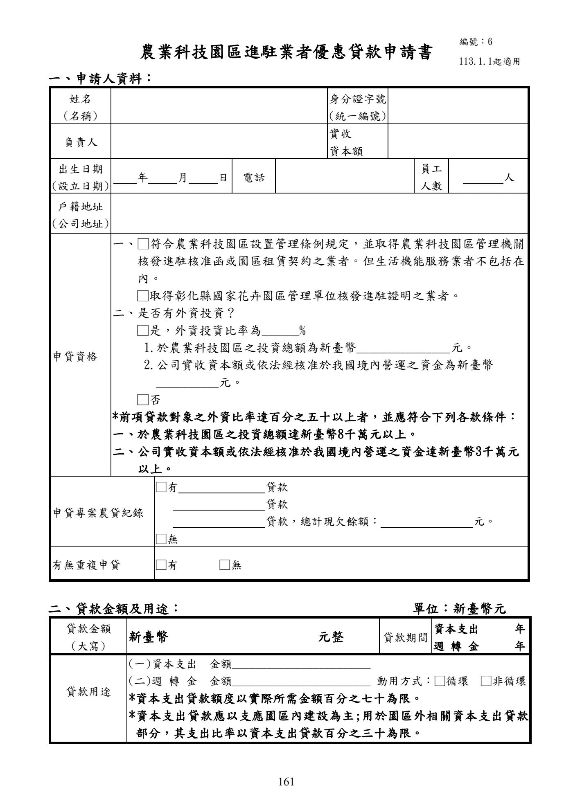
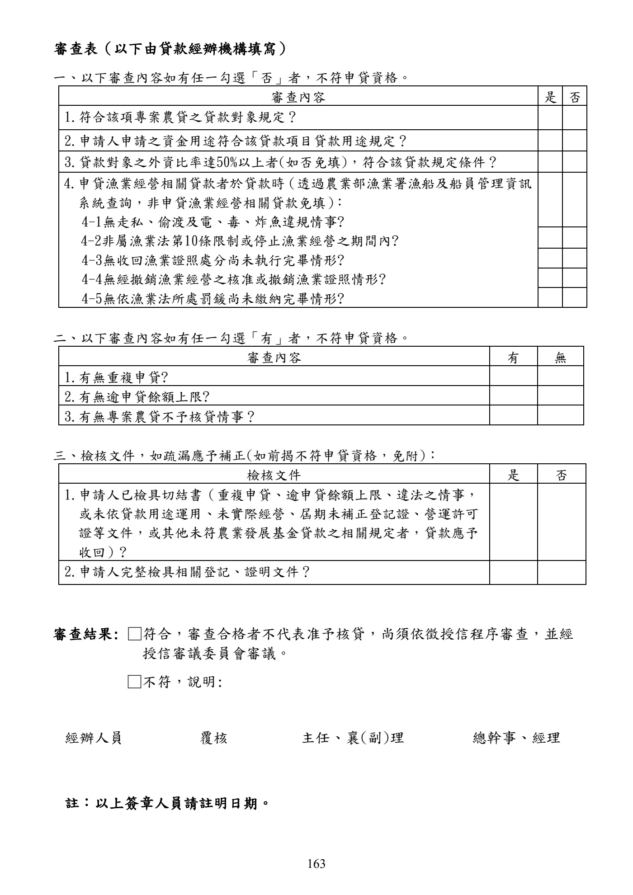

農業科技園區進駐業者優惠貸款
本頁忠實呈現原文，不提供資格摘要、額度摘要、利率摘要或核貸判斷。
手冊頁：158 PDF頁：160／359
農業科技園區進駐業者優惠貸款要點中華民國 94 年 12 月 30 日行政院農業委員會農授金字第 0945080617 號令訂定中華民國 96 年 7 月 6 日行政院農業委員會農金字第 0965080230 號令修正中華民國 96 年 12 月 7 日行政院農業委員會農金字第 0965080442 號令修正第 8 點規定，並自 96 年 7 月 1 日生效中華民國 97 年 1 月 21 日行政院農業委員會農金字第 0975080023 號令修正第 4 點規定；並自即日生效中華民國 98 年 4 月 8 日行政院農業委員會農金字第 0985080161 號令修正中華民國 99 年 5 月 10 日行政院農業委員會農金字第 0995080229 號令修正中華民國 102 年 4 月 26 日行政院農業委員會農金字第 1025080172 號令修正中華民國 103 年 2 月 28 日行政院農業委員會農金字第 1035080092 號令修正中華民國 105 年 3 月 18 日行政院農業委員會農金字第 1055084021F 號令修正第 8 點、第 10 點、第 14 點，並自 105 年 3 月 22 日生效中華民國 106 年 6 月 5 日行政院農業委員會農金字第 1065084050B 號令修正第 12 點，並自 106 年 6 月 9 日生效中華民國108 年11 月22 日行政院農業委員會農金字第 1085084745F 號令修正第2 點、第 11 點、第 16 點，並自 108 年 11 月 25 日生效中華民國 109 年 2 月 27 日行政院農業委員會農授金字第 1095084100E 號令修正第 11點、第 14 點，並自 109 年 3 月 1 日生效中華民國 109 年 10 月 21 日行政院農業委員會農授金字第 1095085177E 號令修正第 11點、第 12 點，並自 109 年 11 月 1 日生效中華民國 112 年 12 月 12 日農業部農授金字第 1125085578 號令修正發布部分規定，並自 113 年 1 月1 日生效中華民國 114 年 10 月 9 日農業部農授金字第 1147467206 號令修正第 3 點，並自中華民國 114 年 9 月 1 日生效
一、農業部為發展農業科技，營造農業科技產業群聚，促進農業產業轉型，並鼓勵業者進駐農業科技園區投資，特訂定本要點。
二、農業科技園區進駐業者優惠貸款除依辦理政策性農業專案貸款辦法辦理外，依本要點規定辦理。本要點未規定者，依農業發展基金貸款作業規範及其他有關規定辦理。
三、農業科技園區分為中央政府主導型及地方政府主導型二類：
(一) 中央政府主導型：係指由農業部依農業科技園區設置管理條例設置，並負責規劃及開發位於屏東縣之農業科技園區、位於臺南市之花卉創新園區及位於桃園市之桃園農業物流加工園區。
(二) 地方政府主導型：係指由直轄市、縣（市）政府依產業實際需求規劃、設置及開發之園區，如彰化縣國家花卉園區。
四、本貸款之對象如下：
(一) 取得農業科技園區管理機關核發進駐核准函或園區租賃契約之業者。但生活機能服務業者不包括在內。
(二) 取得彰化縣國家花卉園區管理單位核發進駐證明之業者。
查看PDF原始文字層
農業科技園區進駐業者優惠貸款要點 中華民國 94 年 12 月 30 日行政院農業委員會農授金字第 0945080617 號令訂定 中華民國 96 年 7 月 6 日行政院農業委員會農金字第 0965080230 號令修正 中華民國 96 年 12 月 7 日行政院農業委員會農金字第 0965080442 號令修正第 8 點規 定，並自 96 年 7 月 1 日生效 中華民國 97 年 1 月 21 日行政院農業委員會農金字第 0975080023 號令修正第 4 點規 定；並自即日生效 中華民國 98 年 4 月 8 日行政院農業委員會農金字第 0985080161 號令修正 中華民國 99 年 5 月 10 日行政院農業委員會農金字第 0995080229 號令修正 中華民國 102 年 4 月 26 日行政院農業委員會農金字第 1025080172 號令修正 中華民國 103 年 2 月 28 日行政院農業委員會農金字第 1035080092 號令修正 中華民國 105 年 3 月 18 日行政院農業委員會農金字第 1055084021F 號令修正第 8 點、 第 10 點、第 14 點，並自 105 年 3 月 22 日生效 中華民國 106 年 6 月 5 日行政院農業委員會農金字第 1065084050B 號令修正第 12 點， 並自 106 年 6 月 9 日生效 中華民國108 年11 月22 日行政院農業委員會農金字第 1085084745F 號令修正第2 點、 第 11 點、第 16 點，並自 108 年 11 月 25 日生效 中華民國 109 年 2 月 27 日行政院農業委員會農授金字第 1095084100E 號令修正第 11 點、第 14 點，並自 109 年 3 月 1 日生效 中華民國 109 年 10 月 21 日行政院農業委員會農授金字第 1095085177E 號令修正第 11 點、第 12 點，並自 109 年 11 月 1 日生效 中華民國 112 年 12 月 12 日農業部農授金字第 1125085578 號令修正發布部分規定，並 自 113 年 1 月1 日生效 中華民國 114 年 10 月 9 日農業部農授金字第 1147467206 號令修正第 3 點，並自中華 民國 114 年 9 月 1 日生效 一、 農業部為發展農業科技，營造農業科技產業群聚，促進農業產業轉型，並鼓勵業者 進駐農業科技園區投資，特訂定本要點。 二、 農業科技園區進駐業者優惠貸款除依辦理政策性農業專案貸款辦法辦理外，依本要 點規定辦理 。 本要點未規定者 ， 依農業發展基金貸款作業規範及其他有關規定辦理 。 三、 農業科技園區分為中央政府主導型及地方政府主導型二類： (一) 中央政府主導型：係指由農業部依農業科技園區設置管理條例設置，並負責規 劃及開發位於屏東縣之農業科技園區、 位於臺南市之花卉創新園區及位於桃園 市之桃園農業物流加工園區。 (二) 地方政府主導型：係指由直轄市、縣（市）政府依產業實際需求規劃、設置及 開發之園區，如彰化縣國家花卉園區。 四、 本貸款之對象如下： (一) 取得農業科技園區管理機關核發進駐核准函或園區租賃契約之業者 。但生活機 能服務業者不包括在內。 (二) 取得彰化縣國家花卉園區管理單位核發進駐證明之業者。
手冊頁：159 PDF頁：161／359
前項借款人之外資比率達百分之五十以上者，並應再符合下列各款條件：
(一) 於農業科技園區之投資總額達新臺幣八千萬元以上。
(二) 公司實收資本額或依法經核准於我國境內營運之資金達新臺幣三千萬元以上。
五、本貸款之用途為興建或購置廠房、設施、設備、溫室、材料及其附屬設施之資本支出及相關經營所須週轉金。
前項資本支出貸款以支應園區內建設為主；用於園區外相關資本支出貸款部分，其支出比率以資本支出貸款百分之三十為限。
六、本貸款經辦機構為設有信用部之農（漁）會、全國農業金庫及臺灣銀行設於屏東縣農業科技園區之分行。
設有信用部之農（漁）會辦理本貸款，應與全國農業金庫以聯貸方式辦理。
臺灣銀行設於屏東縣農業科技園區之分行得辦理之政策性農業專案貸款，限於該園區內進駐業者申貸之本項貸款。
七、本貸款之輔導機關為農業部及彰化縣政府。
八、本貸款由貸款經辦機構提供貸款資金，並由農業發展基金就其出資金給予利息差額補貼。
九、本貸款風險由貸款經辦機構負擔。
十、本貸款利率依辦理政策性農業專案貸款辦法相關規定辦理。
十一、本貸款期限依貸款額度及購置設備耐用年限覈實貸放，其中資本支出最長十五年，週轉金最長五年。但週轉金採循環動用者，貸款期限最長三年。
十二、本貸款每一借款人最高貸款額度為新臺幣八千萬元，其中週轉金最高貸款額度為新臺幣一千萬元。但於農業科技園區內興建廠房之資本支出與週轉金，經農業部專案同意者，不在此限。
前項貸款用途屬資本支出者，其貸款額度並以實際所需金額百分之七十為限。
十三、本貸款由貸款經辦機構按核定所需金額一次或分次撥付；其屬資本支出者，借款人應檢具相關支付憑證（統一發票、營利事業收據或進口完稅證明）。
十四、本貸款償還方式如下：
(一) 資本支出：
1. 本金以每半年一期平均攤還為原則，利息隨同繳付。
2. 本金得酌訂寬緩期限，最長不得超過三年。
(二) 週轉金：
1. 非循環動用者：
(1)本金以每半年一期平均攤還為原則，利息隨同繳付。
(2)本金得酌訂寬緩期限，最長不得超過二年。
2. 循環動用者：額度到期結清，本金於貸款期限及核定額度內隨時可動撥或清償，利息按月繳付。
前項本息攤還方式得由借貸雙方以契約另定之。但不得超過農業部所訂定之最長期限。
十五、本貸款擔保方式由貸款經辦機構依其授信有關規定，審酌個別授信案件核定；若借款人擔保能力不足，貸款經辦機構應協助送請農業信用保證機構保證。
十六、本貸款資金除循環動用週轉金外，應於核准貸款日起三個月內動用完畢。但屬資本支出，應於核准貸款日起三個月內第一次動用，並依工程進度於二年內動用完
查看PDF原始文字層
前項借款人之外資比率達百分之五十以上者，並應再符合下列各款條件： (一) 於農業科技園區之投資總額達新臺幣八千萬元以上。 (二) 公司實收資本額或依法經核准於我國境內營運之資金達新臺幣三千萬元以上。 五、 本貸款之用途為興建或購置廠房、設施、設備、溫室、材料及其附屬設施之資本支 出及相關經營所須週轉金。 前項資本支出貸款以支應園區內建設為主；用於園區外相關資本支出貸款部分，其 支出比率以資本支出貸款百分之三十為限。 六、 本貸款經辦機構為設有信用部之農（漁）會、全國農業金庫及臺灣銀行設於屏東縣 農業科技園區之分行。 設有信用部之農（漁）會辦理本貸款，應與全國農業金庫以聯貸方式辦理。 臺灣銀行設於屏東縣農業科技園區之分行得辦理之政策性農業專案貸款，限於該園 區內進駐業者申貸之本項貸款。 七、 本貸款之輔導機關為農業部及彰化縣政府。 八、 本貸款由貸款經辦機構提供貸款資金，並由農業發展基金就其出資金給予利息差額 補貼。 九、 本貸款風險由貸款經辦機構負擔。 十、 本貸款利率依辦理政策性農業專案貸款辦法相關規定辦理。 十一、 本貸款期限依貸款額度及購置設備耐用年限覈實貸放 ， 其中資本支出最長十五年 ， 週轉金最長五年。但週轉金採循環動用者，貸款期限最長三年。 十二、 本貸款每一借款人最高貸款額度為新臺幣八千萬元，其中週轉金最高貸款額度為 新臺幣一千萬元。但於農業科技園區內興建廠房之資本支出與週轉金，經 農業部 專案同意者，不在此限。 前項貸款用途屬資本支出者，其貸款額度並以實際所需金額百分之七十為限。 十三、 本貸款由貸款經辦機構按核定所需金額一次或分次撥付；其屬資本支出者， 借款人應檢具相關支付憑證（統一發票、營利事業收據或進口完稅證明） 。 十四、 本貸款償還方式如下： (一) 資本支出： 1. 本金以每半年一期平均攤還為原則，利息隨同繳付。 2. 本金得酌訂寬緩期限，最長不得超過三年。 (二) 週轉金： 1. 非循環動用者： (1)本金以每半年一期平均攤還為原則，利息隨同繳付。 (2)本金得酌訂寬緩期限，最長不得超過二年。 2. 循環動用者：額度到期結清，本金於貸款期限及核定額度內隨時可動撥或 清償，利息按月繳付。 前項本息攤還方式得由借貸雙方以契約另定之。但不得超過農業部所訂定之最長 期限。 十五、 本貸款擔保方式由貸款經辦機構依其授信有關規定，審酌個別授信案件核定；若 借款人擔保能力不足，貸款經辦機構應協助送請農業信用保證機構保證。 十六、 本貸款資金除循環動用週轉金外，應於核准貸款日起三個月內動用完畢。但屬資 本支出，應於核准貸款日起三個月內第一次動用，並依工程進度於二年內動用完
手冊頁：160 PDF頁：162／359
畢。
借款人確有困難，致工程未能於前項期限內完成者，得向貸款經辦機構申請延長資本支出貸款之動用期限，最長一年，並以一次為限。
貸款經辦機構受理前項申請，經評估確有必要者，應向全國農業金庫申請變更動用期限。
十七、中國農民銀行、合作金庫銀行、臺灣土地銀行於本要點實施前所承作之貸款案件，依既有條件辦理至原契約到期為止。
查看PDF原始文字層
畢。 借款人確有困難，致工程未能於前項期限內完成者，得向貸款經辦機構申請延長 資本支出貸款之動用期限，最長一年，並以一次為限。 貸款經辦機構受理前項申請，經評估確有必要者，應向全國農業金庫申請變更動 用期限。 十七、 中國農民銀行 、 合作金庫銀行 、 臺灣土地銀行於本要點實施前所承作之貸款案件 ， 依既有條件辦理至原契約到期為止。
手冊頁：161 PDF頁：163／359
{kind=link}

展開查看PDF原始文字層
編號：6 113.1.1起適用 農業科技園區進駐業者優惠貸款申請書 一、申請人資料： 姓名 (名稱) 身分證字號 (統一編號) 負責人 實收 資本額 出生日期 (設立日期) 年 月 日 電話 員工 人數 人 戶籍地址 (公司地址) 申貸資格 一、□符合農業科技園區設置管理條例規定，並取得農業科技園區管理機關 核發進駐核准函或園區租賃契約之業者。但生活機能服務業者不包括在 內。 □取得彰化縣國家花卉園區管理單位核發進駐證明之業者。 二、是否有外資投資？ □是，外資投資比率為______% 1.於農業科技園區之投資總額為新臺幣_______________元。 2.公司實收資本額或依法經核准於我國境內營運之資金為新臺幣 __________元。 □否 *前項貸款對象之外資比率達百分之五十以上者，並應符合下列各款條件： 一、於農業科技園區之投資總額達新臺幣8千萬元以上。 二、公司實收資本額或依法經核准於我國境內營運之資金達新臺幣3千萬元 以上。 申貸專案農貸紀錄 □有 貸款 貸款 貸款，總計現欠餘額： 元。 □無 有無重複申貸 □有 □無 二、貸款金額及用途： 單位：新臺幣元 貸款金額 (大寫) 新臺幣 元整 貸款期間 資本支出 年 週 轉 金 年 貸款用途 (一)資本支出 金額________________________ (二)週 轉 金 金額________________________ 動用方式：□循環 □非循環 *資本支出貸款額度以實際所需金額百分之七十為限。 *資本支出貸款應以支應園區內建設為主 ;用於園區外相關資本支出貸款 部分，其支出比率以資本支出貸款百分之三十為限。
手冊頁：162 PDF頁：164／359
*本人知悉貸後資本支出應檢附相關支付憑證（統一發票、營利事業收據或進口完稅證明），以佐證貸款用途。
*經農業部專案提高貸款部分，限於支應農業科技園區內興建廠房之資本支出。
申請人(簽章)：_____________________敬請惠予核貸為荷此致貸款經辦機構申請人(簽章)：中華民國年月日
備註：其他徵授信資料請依貸款經辦機構相關規定辦理。
查看PDF原始文字層
*本人知悉貸後資本支出應檢附相關支付憑證 （統一發票 、 營利事業收據或 進口完稅證明） ，以佐證貸款用途。 *經農業部專案提高貸款部分，限於支應農業科技園區內興建廠房之資本 支出。 申請人(簽章)：_____________________ 敬請 惠予核貸為荷 此致 貸款經辦機構 申請人(簽章)： 中 華 民 國 年 月 日 備註：其他徵授信資料請依貸款經辦機構相關規定辦理。
手冊頁：163 PDF頁：165／359
{kind=link}

展開查看PDF原始文字層
經辦人員 覆核 主任、襄(副)理 總幹事、經理 註：以上簽章人員請註明日期。 審查表（以下由貸款經辦機構填寫） 一、以下審查內容如有任一勾選「否」者，不符申貸資格。 審查內容 是 否 1.符合該項專案農貸之貸款對象規定？ 2.申請人申請之資金用途符合該貸款項目貸款用途規定？ 3.貸款對象之外資比率達50%以上者(如否免填)，符合該貸款規定條件？ 4.申貸漁業經營相關貸款者於貸款時 （透過農業部漁業署漁船及船員管理資訊 系統查詢，非申貸漁業經營相關貸款免填） ： 4-1無走私、偷渡及電、毒、炸魚違規情事? 4-2非屬漁業法第10條限制或停止漁業經營之期間內? 4-3無收回漁業證照處分尚未執行完畢情形? 4-4無經撤銷漁業經營之核准或撤銷漁業證照情形? 4-5無依漁業法所處罰鍰尚未繳納完畢情形? 二、以下審查內容如有任一勾選「有」者，不符申貸資格。 審查內容 有 無 1.有無重複申貸? 2.有無逾申貸餘額上限? 3.有無專案農貸不予核貸情事？ 三、檢核文件，如疏漏應予補正(如前揭不符申貸資格，免附)： 檢核文件 是 否 1.申請人已檢具切結書（重複申貸、逾申貸餘額上限、違法之情事， 或未依貸款用途運用、未實際經營、屆期未補正登記證、營運許可 證等文件，或其他未符農業發展基金貸款之相關規定者，貸款應予 收回）? 2.申請人完整檢具相關登記、證明文件？ 審查結果: □符合，審查合格者不代表准予核貸，尚須依徵授信程序審查，並經 授信審議委員會審議。 □不符，說明:
手冊頁：164 PDF頁：166／359
函令摘要：農業科技園區進駐業者園區內資金需求，得申貸「輔導農糧業經營貸款」【行政院農業委員會 109 年 7 月 16 日農金字第 1095084853 號函】主旨：有關農業科技園區進駐業者園區內之資金需求，得否申貸「輔導農糧業經營貸款」案，請依說明辦理，請查照。
說明：考量花卉產業相關政策因時制宜，「輔導農糧業經營貸款」資金用途應不以支應園區外之資金需求為限。為利業者得依實際所需選擇合適之貸款項目，旨揭資金可依規定申貸「輔導農糧業經營貸款」或「農業科技園區進駐業者優惠貸款」等其他政策性農業專案貸款。
查看PDF原始文字層
函令摘要：農業科技園區進駐業者園區內資金需求，得申貸「輔導農糧 業經營貸款」 【行政院農業委員會 109 年 7 月 16 日農金字第 1095084853 號函】 主旨 ： 有關農業科技園區進駐業者園區內之資金需求 ， 得否申貸 「輔導農糧業經營貸款」 案，請依說明辦理，請查照。 說明：考量花卉產業相關政策因時制宜， 「輔導農糧業經營貸款」 資金用途應不以支應園 區外之資金需求為限。為利業者得依實際所需選擇合適之貸款項目，旨揭資金可 依規定申貸「輔導農糧業經營貸款」或「農業科技園區進駐業者優惠貸款」等其 他政策性農業專案貸款。